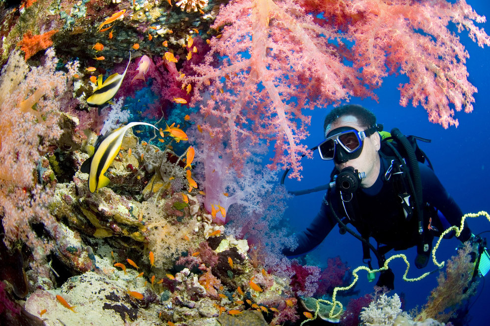
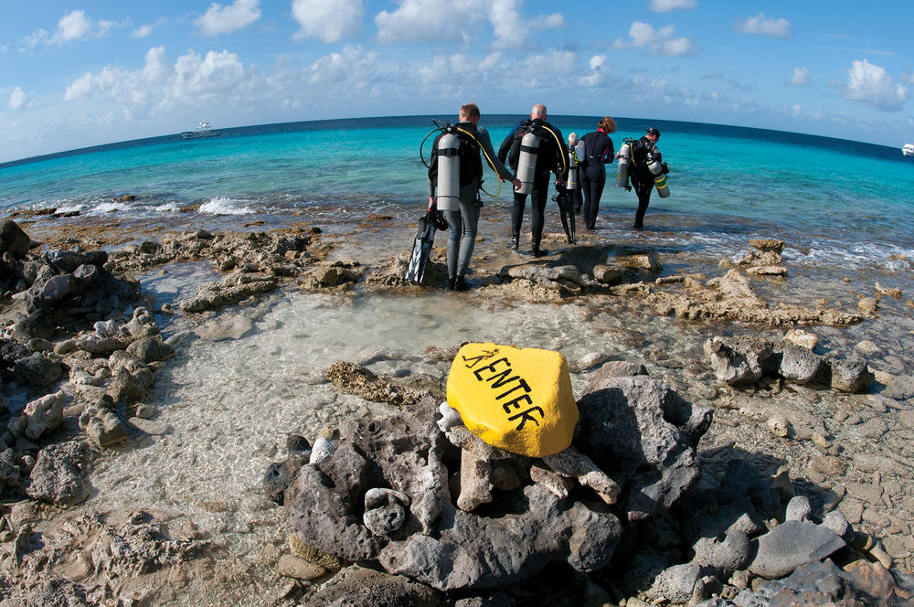

HOW LONG DOES IT TAKE TO GET CERTIFIED?
The PADI Open Water Diver course is flexible and performance based, which means that your PADI dive shop can offer a wide variety of schedules, organized according to how fast you progress. It’s possible to complete your confined and open water dives in three or four days by completing the knowledge development portion online via PADI eLearning, or other home study options offered by your local dive shop or resort.
Your PADI Instructor will focus on helping you become a confident and comfortable diver, not on how long it takes. You earn your certification based on demonstrating you know what you need to know and can do what you need to do. This means that you progress at your own pace – faster or slower depending upon the time you need – to become a competent scuba diver.
HOW MUCH DO SCUBA LESSONS COST?
Compared with other popular adventure sports and outdoor activities, learning to scuba dive isn’t expensive. For example, you can expect to pay about the same as you would for:
- a full day of surfing lessons.
- weekend of rock climbing lessons.
- a weekend of kayaking lessons.
- a weekend of fly-fishing lessons.
- about three hours of private golf lessons.
- about three hours of private water skiing lessons.
- one amazing night out at the pub!
Learning to scuba dive is a great value when you consider that you learn to dive under the guidance and attention of a highly trained, experienced professional – your PADI Scuba Instructor. What’s more, you receive a certification to scuba dive at the end of a PADI Open Water Diver course (few other activities can offer that).
WHAT GEAR DO I NEED TO SCUBA DIVE?
Choosing and using your scuba gear is part of the fun of diving. Your local PADI Dive Center or Resort will help you find the right gear. Each piece of scuba equipment has a different function so that together, it adapts you to the underwater world.
When you start learning to scuba dive, as a minimum, you'll want your own:
- Snorkel
- Mask
- Fins
During your PADI Open Water Diver course, you’ll learn to use a regulator, buoyancy control device (BCD), dive computer or dive planner, scuba tank, wetsuit or dry suit and weight system. Check with your local PADI Resort or dive shop to confirm what equipment is included in your course package. Consider investing in all your own scuba equipment when you start your course because:
- You’re more comfortable learning to scuba dive using gear you’ve chosen.
- You’re more comfortable using scuba gear fitted for you.
- Scuba divers who own their scuba diving equipment find it more convenient to go diving.
- Having your own scuba diving gear is part of the fun of diving.